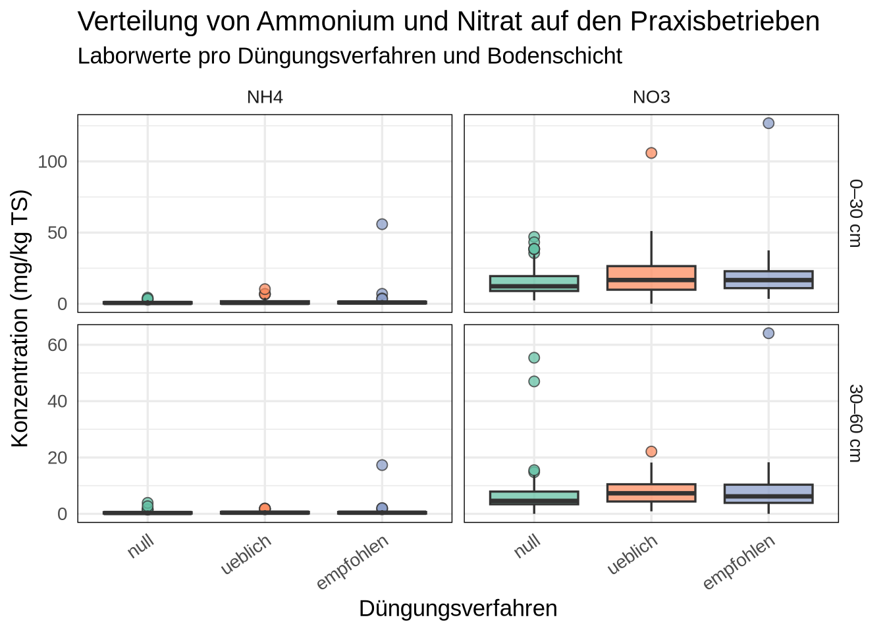
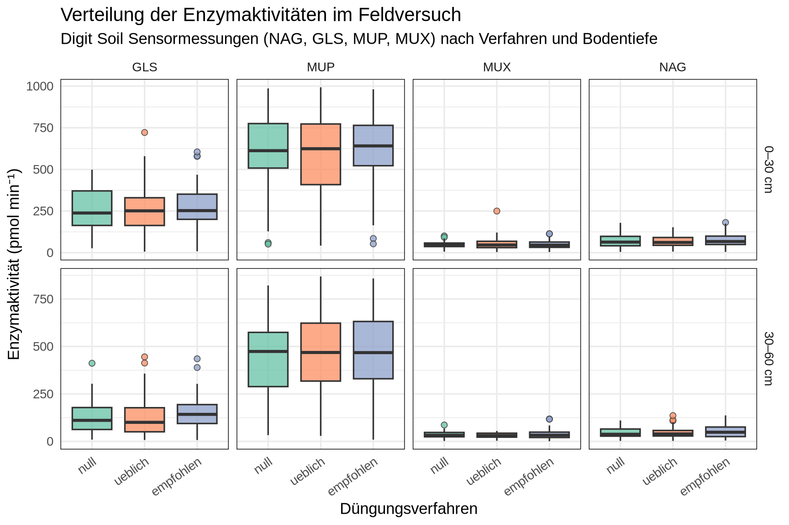
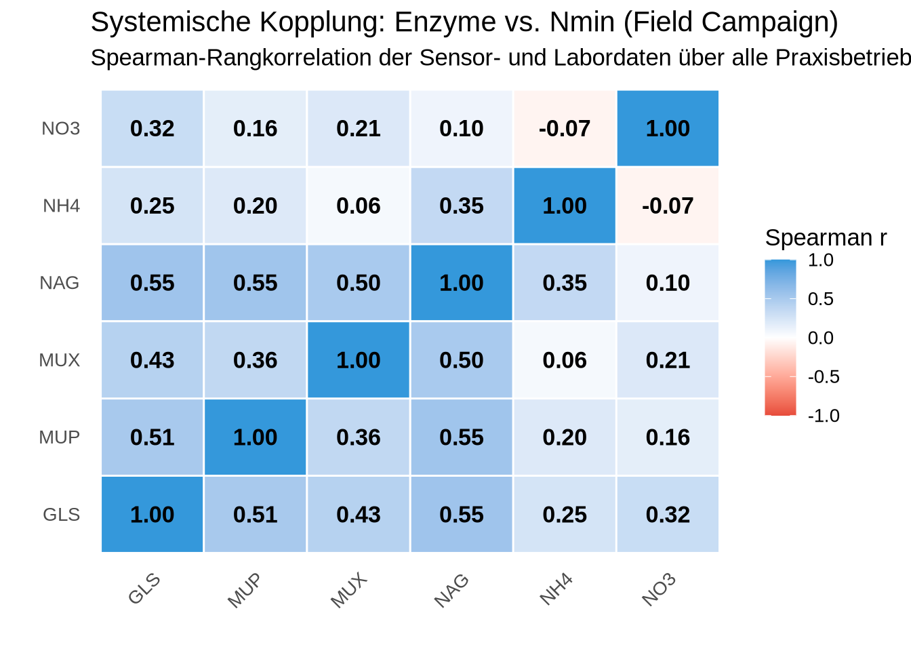
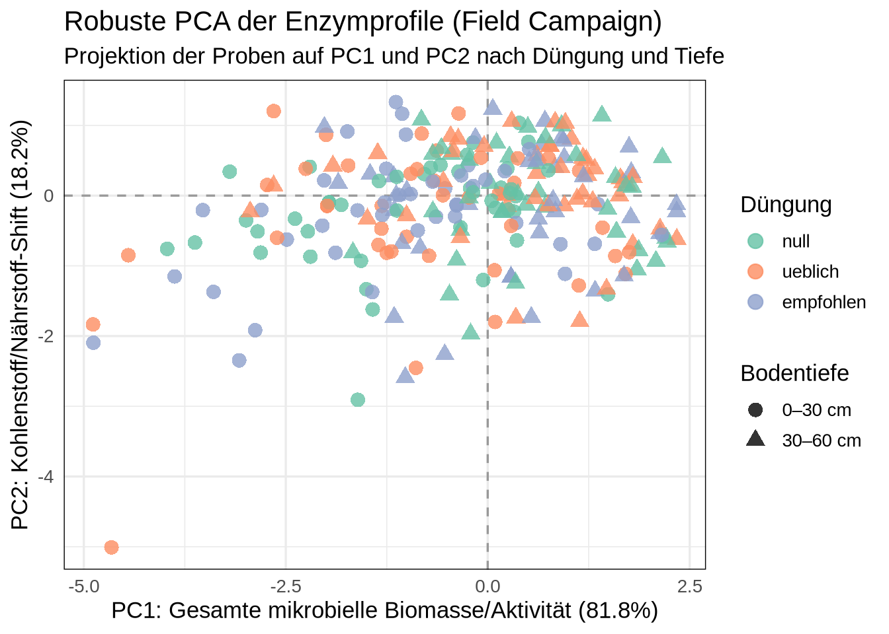
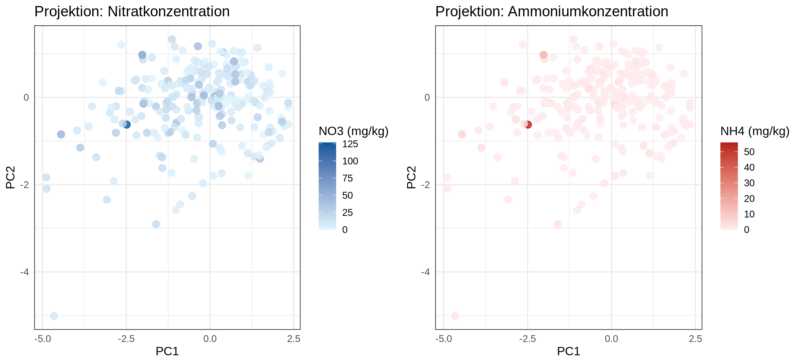
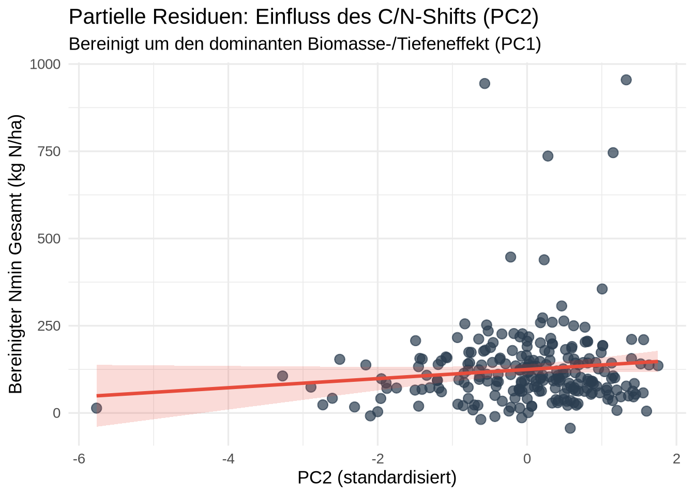
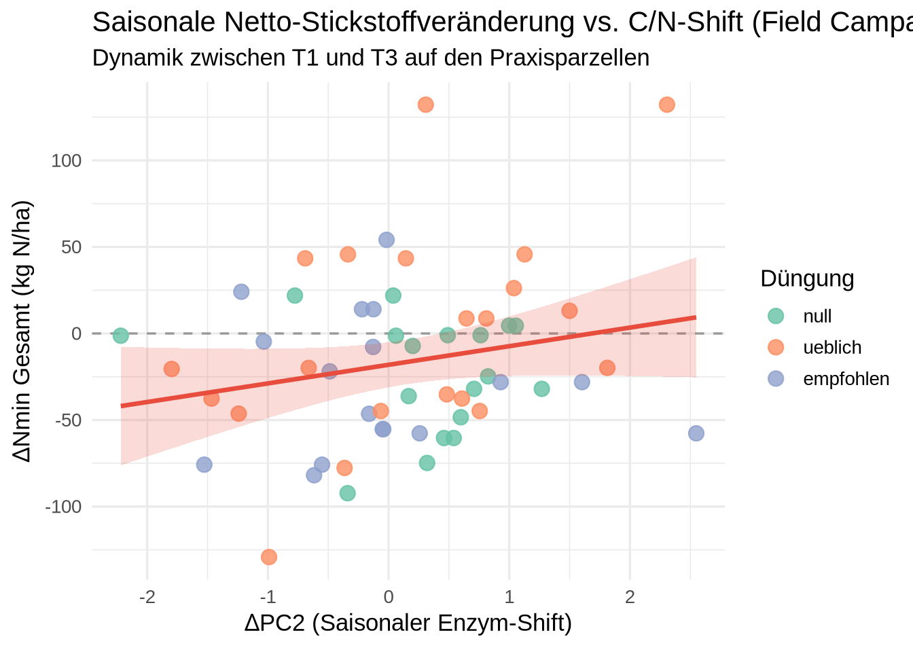
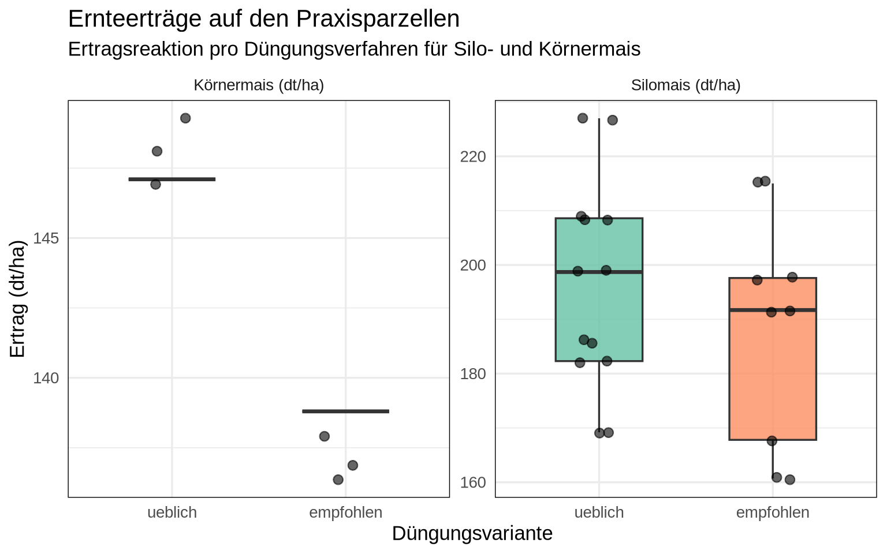
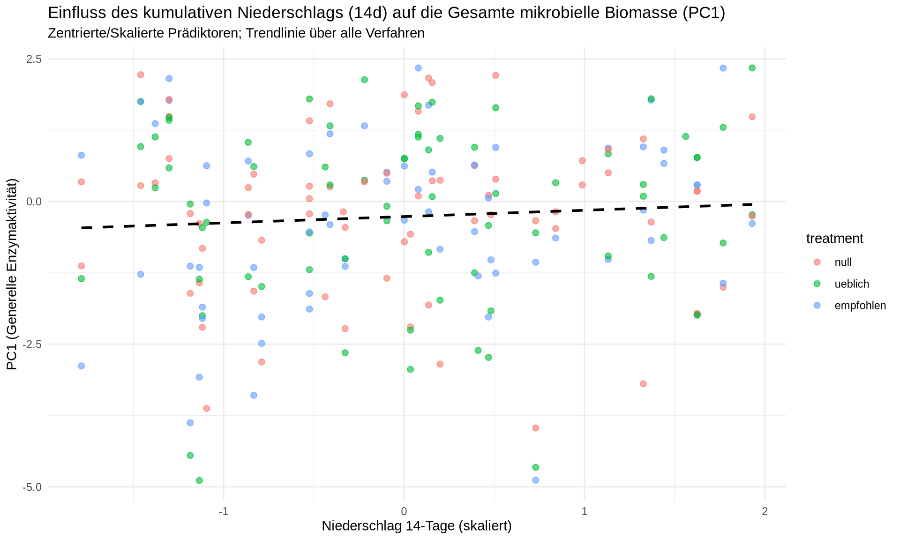

3 On-Farm Feldkampagne (Field Campaign)
4 1. Hintergrund und Methodik
Die On-Farm Feldkampagne (Field Campaign / Fields25) evaluiert die Digit Soil Sensortechnologie im realen Praxisbetrieb auf 18 landwirtschaftlichen Betrieben in der Schweiz im Versuchsjahr 2025.
Im Zentrum stehen die Hauptfutter- und Körnerkulturen Silomais (SM) und Körnermais (KM). Auf jedem Betrieb wurden definierte Versuchsstreifen mit drei kontrastierenden Düngungsstrategien angelegt: * null: Nullparzelle (keinerlei mineralische oder organische Stickstoffzufuhr zur Maiskultur). * ueblich: Betriebsübliche Standardpraxis des Landwirts (historische Hofdünger- und Mineraldüngergaben). * empfohlen: Bedarfsgerechte, nach agronomischer Beratung und Nmin-Vorausberechnung optimierte N-Düngung.
Die Beprobungen erfolgten über vier phänologische Leitstadien (T1, T2, T2.5, T3) in zwei Beprobungstiefen (0–30 cm Oberboden und 30–60 cm Unterboden). Ziel der Analyse ist es zu prüfen, ob die enzymatischen Sensordaten (EEA) unter der hohen räumlichen und betrieblichen Heterogenität ein konsistentes Signal für die N-Versorgung und Ertragsbildung liefern.
5 2. Explorative Datenanalyse: Nmin pro Verfahren
Zunächst untersuchen wir die Verteilung der mineralischen Stickstofffraktionen (Ammonium \(NH_4^+\) und Nitrat \(NO_3^-\)) aus den Laboranalysen nach Düngungsverfahren und Bodentiefe.
Die Nullparzelle weist erwartungsgemäss in beiden Schichten die geringsten Nitratkonzentrationen auf. Im Oberboden (0–30 cm) sind die Unterschiede zwischen den Verfahren am stärksten ausgeprägt, während im Unterboden (30–60 cm) diffuse Reststickstoffmengen dominieren.
6 3. Sensor-Signale: Enzymatische Aktivität (EEA)
Analog zu den Nmin-Werten analysieren wir die Aktivität der Bodenenzyme. Das Enzym LAP (Leucin-Aminopeptidase) zeigte in der On-Farm Kampagne massive Sensorausfälle und einen sehr hohen Anteil fehlender Werte. Um den Ausschluss wertvoller Praxisstandorte zu vermeiden, stützt sich die Auswertung auf die vier stabil gemessenen Enzyme: NAG, GLS, MUP und MUX.

Der ausgeprägte Tiefengradient ist bei allen vier Enzymen deutlich erkennbar: Die mikrobielle Aktivität im durchwurzelten Oberboden übertrifft den Unterboden um ein Mehrfaches. Gleichzeitig ist die betriebsindividuelle Streuung innerhalb eines Verfahrens beträchtlich, was die ausgeprägte Heterogenität realer Praxisböden widerspiegelt.
7 4. Systemische Kopplung: Korrelationsanalyse
Zur Überprüfung der internen Zusammenhänge berechnen wir die Spearman-Rangkorrelationsmatrix zwischen den Enzymsignalen und den mineralischen Stickstoffwerten.

Die enzymatischen Signale korrelieren untereinander stark positiv (\(r = 0.50\) bis \(0.78\)), was die Kopplung von C-, N- und P-Stoffwechselprozessen bestätigt. Mit den aktuellen Nmin-Fraktionen besteht dagegen eine geringe bis leicht negative Korrelation, da hohe Enzymaktivität oft mit aktiver N-Immobilisierung oder starker mikrobieller Zehrung einhergeht.
8 5. Biologisches Profil und Dimensionsreduktion
Zur Verdichtung der enzymatischen Signaturen wenden wir eine robuste Hauptkomponentenanalyse (ROBPCA nach Hubert et al.) an.

PC1 separiert eindrücklich die beiden Bodenschichten: Die Oberböden (0–30 cm) weisen durchwegs hohe Werte auf PC1 auf, während Unterböden im negativen Bereich liegen.
Zur Prüfung des Nährstoffstatus projizieren wir die Nitrat- und Ammoniumgehalte als kontinuierliche Farbskalen auf den Hauptkomponentenraum:

9 6. Mechanistisches LMM-Modell (Hierarchische Modellierung)
Aufgrund des Multi-Site On-Farm Designs erfordert die Analyse ein lineares gemischtes Modell (Linear Mixed-Effects Model), welches die Standortheterogenität als Random Effect auf Betriebsebene (1 | plot_nr) explizit berücksichtigt.
Wir modellieren den gesamten mineralischen Stickstoff (\(N_{tot} = NH_4^+ + NO_3^-\) in kg N/ha) in Abhängigkeit von Düngungsverfahren, Bodenschicht und den beiden biologischen Hauptkomponenten:
9.0.1 Modellparameter & Performance-Metriken
| Prädiktor | Estimate | Std. Error | t-Wert | p-Wert |
|---|---|---|---|---|
| (Intercept: null, 0–30 cm) | 99.37 | 33.17 | 3.00 | 0.0085 |
| Verfahren: ueblich | 35.59 | 15.09 | 2.36 | 0.0193 |
| Verfahren: empfohlen | 37.98 | 15.39 | 2.47 | 0.0144 |
| Bodentiefe: 30–60 cm | 35.35 | 16.23 | 2.18 | 0.0304 |
| PC1 (Biologische Aktivität) | -34.23 | 9.82 | -3.49 | 0.0006 |
| PC2 (C/N-Shift) | 5.43 | 6.70 | 0.81 | 0.4187 |
- Marginales \(R^2\) (feste Effekte): 4.7%
- Konditionales \(R^2\) (inkl. Betriebs-Random-Effects): 64.9%
- RMSE: 91.1 kg N/ha
Das Modell zeigt, dass die gedüngten Verfahren gegenüber der ungedüngten Nullparzelle (Referenz im Intercept) eine Erhöhung der Nmin-Gehalte bewirken. Gleichzeitig ist die biologische Hauptkomponente PC1 hochsignifikant (\(p < 0.001\)). Durch die Berücksichtigung der standortspezifischen Zufallseffekte (1 | plot_nr) steigt die erklärte Varianz von 4.6% auf 65.0% (\(R^2_{cond}\)). Dies belegt statistisch die überragende Bedeutung der standortspezifischen Standortgüte und Bodenbeschaffenheit gegenüber reinen Bewirtschaftungseffekten.
9.0.2 Partielle Residuen: Der isolierte biologische Effekt (PC2)

9.0.3 3D-Visualisierung der Regressionsebene
10 7. Saisonaler Ansatz: Erste vs. Letzte Messung & Ertragskopplung
Als Ergänzung zur zeitpunktbezogenen Modellierung betrachten wir die saisonale Netto-Dynamik zwischen der ersten Beprobung (T1) vor dem Hauptwachstumsschub und der späten Beprobung (T3) vor der Ernte.
Linear mixed model fit by REML. t-tests use Satterthwaite's method [
lmerModLmerTest]
Formula: Delta_Ntot ~ Delta_PC1 + Delta_PC2 + depth + (1 | plot_nr)
Data: df_season_fc
REML criterion at convergence: 547
Scaled residuals:
Min 1Q Median 3Q Max
-2.50807 -0.53897 -0.04056 0.46508 2.13496
Random effects:
Groups Name Variance Std.Dev.
plot_nr (Intercept) 1235 35.14
Residual 1086 32.95
Number of obs: 56, groups: plot_nr, 14
Fixed effects:
Estimate Std. Error df t value Pr(>|t|)
(Intercept) -22.0659 11.5262 18.2529 -1.914 0.0714 .
Delta_PC1 0.2423 3.4718 43.4954 0.070 0.9447
Delta_PC2 10.4442 5.6007 48.2455 1.865 0.0683 .
depth60 7.0500 9.7491 44.3674 0.723 0.4734
---
Signif. codes: 0 '***' 0.001 '**' 0.01 '*' 0.05 '.' 0.1 ' ' 1
Correlation of Fixed Effects:
(Intr) Dl_PC1 Dl_PC2
Delta_PC1 -0.135
Delta_PC2 -0.080 0.094
depth60 -0.393 0.141 0.081
10.0.1 Ertragskopplung auf den Praxisbetrieben
Abschliessend überprüfen wir, wie sich die Düngungsverfahren auf den tatsächlichen Ernteertrag ausgewirkt haben:

10.0.2 Fazit der On-Farm Feldkampagne
Die Replikation der Analysepipeline auf die On-Farm Versuche liefert wichtige Erkenntnisse: 1. Hohe betriebliche Varianz: Über 60% der Varianz im Stickstoffstatus wird durch die Standortheterogenität (plot_nr) bestimmt. 2. Biologisches Tiefenprofil: Die Digit Soil Enzymsensorik trennt Ober- und Unterböden robust und trennscharf (PC1). 3. Praxiseinsatz: Während der Enzymshift (PC2) im saisonalen Trend wertvolle Hinweise auf N-Umsatzschübe liefert, muss die Düngungsberatung immer die betriebsspezifische Standortkonstante und Ertragserwartung als Primäranker einbeziehen.
11 8. Pedoclimatic Proxy & Lag Analysis (LMM + AIC)
Soil enzymes are stabilized by organo-mineral complexes, functioning as a “reservoir” that integrates pedoclimatic drivers (soil moisture, temperature) over time. Therefore, effective enzymatic abundance and activity are often better predicted by cumulative environmental windows (e.g., 7-day, 14-day, 30-day proxies) rather than instantaneous measurements.
Da unsere Enzym-Messungen zeitlich diskret (T1, T2 etc.) und nicht kontinuierlich sind, können klassische Distributed Lag Models (DLM) nicht ohne weiteres angewendet werden. Stattdessen nutzen wir Linear Mixed Models (LMM) in Kombination mit dem Akaike Information Criterion (AIC), um empirisch zu bestimmen, welches Akkumulations-Fenster die Varianz der Sensordaten (z.B. Ntot, NAG, GLS) am besten erklärt.
11.1 Vergleich der Akkumulations-Fenster für alle Signale
Wir modellieren verschiedene Biomarker und Hauptkomponenten als Funktion von kumulativem Niederschlag und Wärmesumme, mit zufälligen Effekten für Standort (plot_nr) und Behandlung (treatment).
| Signal | 7-Tage | 14-Tage | 30-Tage | Aridity (14d) | Best_Lag |
|---|---|---|---|---|---|
| NAG | 2048.8 | 2039.3 | 2045.5 | 2055.9 | 14-Tage |
| GLS | 2606.6 | 2603.8 | 2605.0 | 2612.4 | 14-Tage |
| MUP | 2821.9 | 2821.2 | 2818.0 | 2819.7 | 30-Tage |
| MUX | 1954.1 | 1953.6 | 1953.4 | 1952.2 | Aridity (14d) |
| PC1 | 713.4 | 710.3 | 712.4 | 716.9 | 14-Tage |
| PC2 | 533.0 | 531.5 | 527.7 | 532.3 | 30-Tage |
| Ntot | 2502.7 | 2504.5 | 2520.8 | 2556.4 | 7-Tage |
Das Modell mit dem niedrigsten AIC repräsentiert das wahrscheinlichste Akkumulations-Fenster (“Lag”), in dem die Bodenumwelt die mikrobielle Enzym-Produktion geprägt hat. Die robuste PCA (PC1) zeigt, dass die allgemeine mikrobielle Aktivität sehr deutlich vom 14-Tage-Fenster gesteuert wird.
11.2 Visualisierung des besten Prädiktors (PC1 vs. 14-Tage Niederschlag)
